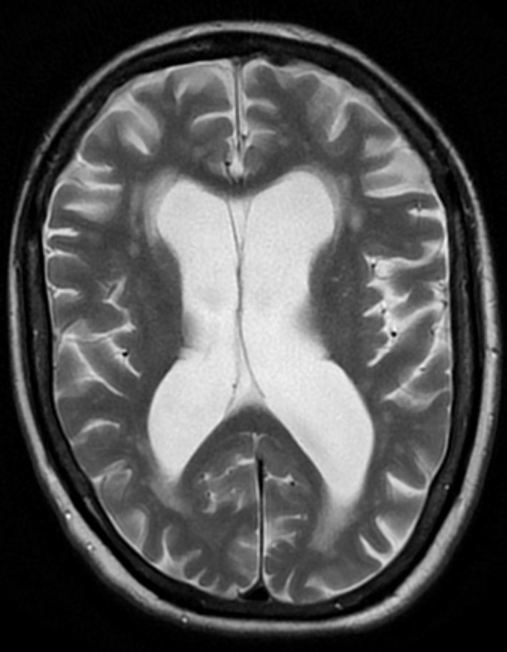

General information only. It does not replace advice from a health professional. For sudden neurological symptoms, call emergency services.


What it is
Vascular dementia is the loss of mental abilities caused by damage to the blood vessels of the brain. It is the second most common cause of dementia after Alzheimer's disease, accounting for 15 to 20% of cases. Very often both coexist in the same person (mixed dementia), especially in older age. Unlike other dementias, it is largely preventable.
Causes
- Small vessel disease: the most common. Long-standing high blood pressure and diabetes damage the thin, deep arteries, producing small (lacunar) infarcts and diffuse white matter lesions (leukoaraiosis), visible on MRI.
- Multiple infarcts or a stroke in a strategic area, such as the thalamus or hippocampus. After a stroke, about one in three people develop cognitive impairment in the following years.
- Brain haemorrhages, especially due to amyloid angiopathy.
- Rare genetic causes, such as CADASIL.
Symptoms
They depend on the area affected, but typical ones are:
- Slowness of thinking and response.
- Difficulty concentrating, planning, organising and making decisions (executive functions), more than memory loss at first.
- Apathy, depression and mood changes, sometimes crying or laughing easily.
- Walking problems: short steps, unsteadiness, falls.
- Urinary urgency and incontinence.
- There may be symptoms of previous strokes, such as weakness on one side or difficulty speaking.
The course may be stepwise, with sudden worsening after new strokes, or slow and progressive in small vessel disease.
Diagnosis
- Medical history, examination and cognitive tests.
- MRI: shows infarcts, white matter lesions and microbleeds.
- Assessment of vascular risk factors: blood pressure, glucose, cholesterol, electrocardiogram.
Treatment
No treatment reverses the damage, but its progression can be slowed:
- Strict blood pressure control: the most important measure. In the SPRINT MIND study, a systolic target below 120 mmHg reduced mild cognitive impairment. See blood pressure and the brain.
- Control of diabetes and cholesterol, stopping smoking, exercise and a Mediterranean diet.
- Antiplatelets or anticoagulants if there have been ischaemic strokes or there is atrial fibrillation. See stroke prevention.
- Medicines for dementia: acetylcholinesterase inhibitors and memantine have a small benefit, greater if Alzheimer's is also present.
- Rehabilitation, physiotherapy for walking and fall prevention.
- Treatment of depression, which is common in this dementia.
Prevention
What is good for the heart is good for the brain. The fall in dementia rates seen in some high-income countries in recent decades is attributed in part to better control of blood pressure and smoking.
Sources
- O'Brien JT, Thomas A. Vascular dementia. Lancet. 2015;386:1698-706.
- Skrobot OA, et al. The Vascular Impairment of Cognition Classification Consensus Study (VICCCS). Alzheimers Dement. 2018;14:280-92.
- SPRINT MIND Investigators. Effect of intensive vs standard blood pressure control on probable dementia. JAMA. 2019;321:553-61.
- Wardlaw JM, et al. Small vessel disease: mechanisms and clinical implications. Lancet Neurol. 2019;18:684-96.